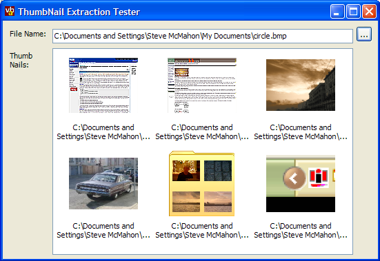

Thumbail Tester Code (45K)
Thumbail Tester Code (45K)
 8 Mar 2003
8 Mar 2003
First Posted
 Auto-File and URL Completion for Text Boxes and Combo Boxes
Auto-File and URL Completion for Text Boxes and Combo Boxes

Thumbnail Extraction Using the Shell
Create Thumbnail images for images, documents, folders, web pages and more!
The Shell provides an IExtractImage interface which allows you to obtain thumbnail images for any file which has a Shell extension that supports the interface. By default there are Shell extensions for images, most Office documents and folders; and other programs can install their own Shell extensions for other file types. This sample provides .NET code you can use to easily get hold of thumbnails using this technique.
Using the Code
The code itself should be very straightforward to use. Just add the code file ThumbnailCreator.cs to your project and you'll find you can create a ThumbnailCreator class from the vbAccelerator.Components.Shell namespace. This object has one property and one method:
- DesiredSize
Gets/sets the size of thumbnail you'd like. Explorer uses 100 x 100 pixels. - GetThumbNail
Returns a System.Drawing.Bitmap for the specified file with the thumbnail, or throws an exception if there's a problem.
Note that you should always check for exceptions when processing for thumbnails. Some objects simply don't support Thumbnails; in Explorer the default processing is to draw the Extra Large Icon from the System Image List in the centre of the Thumbnail area) and other objects only support Thumbnails under specific circumstances. For example, although Word and Excel documents support thumbnailing, they only do so when there is an embedded metafile thumbnail - a specific option you have to enable on the Properties dialog of the document. The error message you get thrown back tends to be not particularly valuable either in determining what happened.
By default, you should be able to create thumbnails for all image files, HTML and MHT documents and file folders. The sample code demonstrates adding these to an ImageList which is linked to a ListView; it is also single-threaded and you would probably want to improve matters by requesting the thumbnail on a separate thread using BeginInvoke in a real application.
The Details
The Shell's thumbnail feature is exposed through the IExtractImage interface of a Shell object. In order to get an IExtractImage interface, you first need to have an IShellFolder interface. This is covered in some depth in the Folder Browser article, so I won't cover it in more detail here. I'll cover the steps you need to go through to get at the IExtractImage interface now in turn.
1. Getting a Reference to The IShellFolder Object
First get an IShellFolder instance using the returned SHGetDesktopFolder API call as described in the Folder Browser sample, and then call the ParseDisplayName to get a pidl for the containing folder (note error handling is not shown in these samples for clarity):
IShellFolder folder = null;
SHGetDesktopFolder(out folder);
IntPtr pidlMain = IntPtr.Zero;
int cParsed = 0;
int pdwAttrib = 0;
string directory = Path.GetDirectoryName(file);
folder.ParseDisplayName(
IntPtr.Zero,
IntPtr.Zero,
directory,
out cParsed,
out pidlMain,
out pdwAttrib);
Now we can get an IShellFolder object for this pidl:
Guid iidShellFolder =
new Guid("000214E6-0000-0000-C000-000000000046");
IShellFolder item = null;
folder.BindToObject(
pidlMain,
IntPtr.Zero,
ref iidShellFolder,
ref item);
2. Finding Sub-Item pidls
Having done that, we now want to find the pidl of the object we desire a thumbnail for from the owning folder. To do this the objects within the folder need to be enumerated until the correct item is found:
IEnumIDList idEnum = null;
item.EnumObjects(
IntPtr.Zero,
(ESHCONTF.SHCONTF_FOLDERS | ESHCONTF.SHCONTF_NONFOLDERS),
ref idEnum);
IntPtr pidl = IntPtr.Zero;
int fetched = 0;
bool complete = false;
while (!complete)
{
hRes = idEnum.Next(1, ref pidl, out fetched);
if (hRes != 0)
{
// end of enumeration
pidl = IntPtr.Zero;
complete = true;
}
else
{
// check if pidl is the correct item and
// get the thumbnail. This function returns
// true as soon as it finds a match,
// regardless of whether the thumbnail
// can be extracted:
if (getThumbnail(file, item, pidl)
{
complete = true;
}
}
if (pidl != IntPtr.Zero)
{
Allocator.Free(pidl);
}
}
Finally, clear up any objects we created - the Allocator object referred to here is the IMalloc object described in the Folder Browser sample:
Marshal.ReleaseComObject(idEnum); Marshal.ReleaseComObject(item); Allocator.Free(pidlMain); Marshal.ReleaseComObject(folder);
3. Processing An Item's Pidl
The final stage is to check if the pidl in question is the file or folder we're thumbnailing, and if it is then to start the thumbnail extraction process:
private bool getThumbnail(
string file,
IShellFolder item,
IntPtr pidl)
{
IntPtr hBmp = IntPtr.Zero;
IExtractImage extractImage = null;
bool ret = false;
string pidlPath = PathFromPidl(pidl);
// pidl is a relative pidl, so only the filename
// portion is relevant:
if (Path.GetFileName(pidlPath).Equals(
Path.GetFileName(file))
{
// This is the right item:
ret = true;
// Try and get the IExtractImage interface:
IUnknown iunk = null;
int prgf = 0;
Guid iidExtractImage = new
Guid("BB2E617C-0920-11d1-9A0B-00C04FC2D6C1");
item.GetUIObjectOf(
IntPtr.Zero,
1,
ref pidl,
ref iidExtractImage,
out prgf,
ref iunk);
extractImage = (IExtractImage)iunk;
// we now have an IExtractImage object...
}
return ret;
}
To support the code above, you need COM Interop libraries for the IExtractImage and IUnknown interfaces:
[ComImport, Guid("00000000-0000-0000-C000-000000000046")]
[InterfaceType(ComInterfaceType.InterfaceIsIUnknown)]
private interface IUnknown
{
[PreserveSig]
IntPtr QueryInterface(ref Guid riid, out IntPtr pVoid);
[PreserveSig]
IntPtr AddRef();
[PreserveSig]
IntPtr Release();
}
[ComImportAttribute()]
[GuidAttribute("BB2E617C-0920-11d1-9A0B-00C04FC2D6C1")]
[InterfaceTypeAttribute(ComInterfaceType.InterfaceIsIUnknown)]
//helpstring("IExtractImage"),
private interface IExtractImage
{
void GetLocation(
[Out(), MarshalAs(UnmanagedType.LPWStr)]
StringBuilder pszPathBuffer,
int cch,
ref int pdwPriority,
ref SIZE prgSize,
int dwRecClrDepth,
ref int pdwFlags);
void Extract(
out IntPtr phBmpThumbnail);
}
Finally, its time to actually exercise the IExtractImage interface itself. To get the thumbnail, first call the GetLocation method to set extraction options and desired image size, and then call Extract to receive a GDI HBITMAP handle to the bitmap, which can then be moved into the GDI+ world using the Image.FromHandle method:
SIZE sz = new SIZE();
sz.cx = desiredSize.Width;
sz.cy = desiredSize.Height;
StringBuilder location = new StringBuilder(260, 260);
int priority = 0;
int requestedColourDepth = 32;
EIEIFLAG flags = EIEIFLAG.IEIFLAG_ASPECT | EIEIFLAG.IEIFLAG_SCREEN;
int uFlags = (int)flags;
extractImage.GetLocation(
location,
location.Capacity,
ref priority,
ref sz,
requestedColourDepth,
ref uFlags);
extractImage.Extract(out hBmp);
if (hBmp != IntPtr.Zero)
{
// create the image object:
thumbNail = System.Drawing.Bitmap.FromHbitmap(hBmp);
}